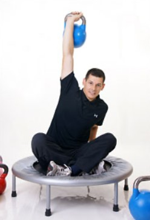

Qualifikationen

- Staatlich geprüfter Sportlehrer
- Leistungssport und Sporttherapie
- Übungsleiter Prävention DSB
- Training und Rehabilitation mit Kettlebells
- Trainerlizenz Leistungssport DLV, Lizenzstufe C und Lizenzstufe B (Mehrkampf)
- Nordic-Walking-Leiter DLV
- XCO®-Trainer
- Walking & Running
- Fitnesstrainer B-Lizenz BSA
- Lauf-Coach
- Trainer für funktionelle Fitness
Sport
Seit ich denken kann, ist Sport ein wichtiger Bestandteil meines Lebens.
Angefangen habe ich wie fast jeder, als kleiner Junge im Fußballverein.
Seitdem habe ich fast jede Sportart kennen gelernt.
Schwimmen, Rettungsschwimmen, Tauchen, Gymnastik, Joga, Surfen, Segeln, Gewichtheben, Fitness, Aerobic, Turnen, Handball, Basketball, Volleyball, American Football, Fußball, Hockey, Faustball, Prellball, Squash, Badminton, Tennis, Tischtennis, Klettern, Ski, Skilanglauf, Nordic-Walking, Billard, Sportschießen, Karate, Judo, Aikido, MTB, Rennrad, Triathlon, Leichtathletik, Kettlebell
Leichtathletik und das Fitnesstraining sind bis heute die Sportarten, die ich auf hohem Niveau betreibe.
Als Leichtathlet (Mehrkampf, Sprint) konnte ich auf regionaler und nationaler Ebene viele Erfolge und Erfahrungen sammeln.
Beruf
Nach der Schule lernte ich erst einmal etwas „Vernünftiges“ und absolvierte eine Ausbildung zum Verwaltungsfachangestellten.
Meiner inneren Berufung folgend erwarb ich noch während meiner Wehrdienstzeit meinen ersten Trainerschein.
Die Ausbildung zum Sportlehrer machte ich nach dem Fachabitur an der Europäischen Akademie des Rheinland-Pfälzischen Sports in Trier.
Nach der Zeit in Trier zog es mich zurück in meine badische Heimat, und ich bekam die Chance, als Sporttherapeut im Therapiezentrum am Schloss zu arbeiten.
Fast zehn Jahre Erfahrung als Trainer, Sportlehrer und Sporttherapeut liegen hinter mir, und ich bin noch immer nicht müde, im Gegenteil ;-)
Privat
Ehrenamtlich trainiere ich den Leichtathletiknachwuchs der TSG Bruchsal.
Im Urlaub segle und tauche ich gern.